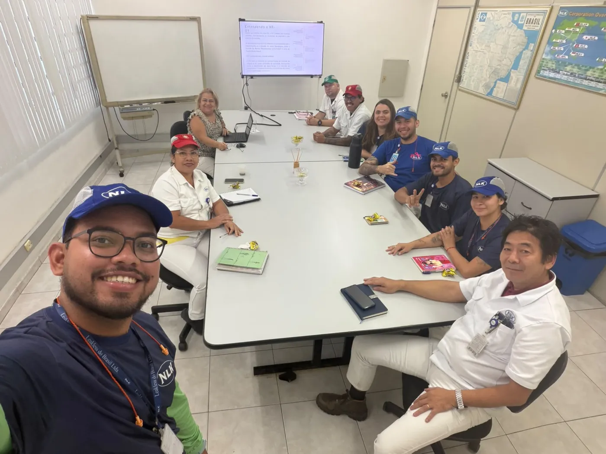

NR-1 em três perguntas
Olhar para as pessoas também é segurança do trabalho
O que é?
A Norma Regulamentadora nº 01, atualizada pela Portaria MTE nº 1.419/2024, organiza a gestão de saúde e segurança no PGR. Agora, os fatores psicossociais também fazem parte dele.
Como implementar?
- 1Identificar o que afeta as pessoas
- 2Avaliar e priorizar por setor
- 3Agir e acompanhar os indicadores
Como a gente implementa?
O que um levantamento revela
Em uma indústria com 193 colaboradores, o diagnóstico mostrou onde cuidar primeiro
Levantamento preliminar em 10 setores, de março de 2026. Dados de cliente, anonimizados.
Exemplo de entregável
Mapa de temas de atenção por setor
É assim que a liderança enxerga, numa tela, onde agir primeiro. Clique num tema para destacar.
As linhas de produção reúnem 145 das 193 pessoas, e é por elas que o plano começa.
Comunicação e convivência entre equipes aparecem em 9 dos 10 setores.
Cada tema vira ações com responsável, prazo e acompanhamento.
Quem já viveu
Na prática, com as equipes
Vamos conversar
Vamos dialogar sobre isso?
Conta pra gente o tamanho da equipe e o momento da empresa.
Implementação da NR-1
Gestão humana para alcançar resultados reais
Cuidar do clima, da liderança e do bem-estar da equipe, com método, dados e gente por perto.

Diferencial estratégico
Um programa que atua em três níveis
Preventivo
Identifica os pontos de atenção cedo, antes que afetem as pessoas.
Assistencial
Oferece avaliação e acompanhamento, com suporte real para as pessoas.
Estratégico
Gera inteligência organizacional sobre o comportamento humano.
Como a gente implementa
As cinco fases, no ritmo da sua empresa
Escolha uma fase para ver o que acontece em cada uma.
Diagnóstico
Cronograma
Do diagnóstico à execução em 20 semanas, com acompanhamento depois
O que você recebe
Entregáveis claros, para a liderança decidir
Classificação por nível
Cada setor classificado em quatro níveis de atenção.
Dashboard executivo
Mapa de calor por área, para ver numa tela onde agir primeiro.
Relatório técnico
Principais temas por setor e recomendações estratégicas.
Perfis GANHAR
Como as pessoas estão funcionando hoje, com caminhos de evolução.
Ferramentas
Instrumentos psicológicos e neuropsicológicos
O diagnóstico usa ferramentas reconhecidas, como o Mapa HDS, e a plataforma do Método GANHAR®, aplicadas e interpretadas por psicólogas.
Complementar · Bem-estar
Cuidado que continua depois do diagnóstico
- Workshops mensais ou trimestrais
- Consultas em clínica médica
- Consultas em psicologia e neuropsicologia, presenciais ou online
Vamos montar a proposta da sua empresa
Investimento por colaborador, com parcelamento em até 6 vezes e primeiro pagamento 15 dias após o aceite.
Os seis pilares
Cada letra é uma dimensão avaliada
O relatório mostra uma nota para cada pilar. A combinação deles forma o perfil funcional.
Duas formas de usar
Para quem você quer usar?
A jornada · para a empresa
Do primeiro "olá" ao plano de ação
Lógica de classificação
Como o perfil é identificado
Condição baixa ou moderada-baixa para a dimensão avaliada.
Condição moderada-alta ou alta para a dimensão avaliada.
Identificação do perfil que orienta o plano de ação prático e imediato.
Perguntas importantes
Perguntas frequentes
Toque numa pergunta para ver a resposta.
Por dentro do app
Calmo, claro e no ritmo de uma conversa
Pronto para começar a conversa?
Gestão humana, desenvolvimento que faz sentido.